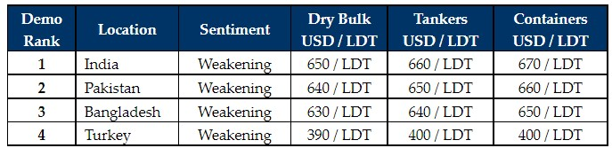

inWeekly Demolition Reports09/05/2022

Sub-continent markets have taken a turn for the worse this week, as collapsing steel prices in India and Eid holidays in Pakistan, Bangladesh, and Turkey have led to depressed sentiments and virtually no new offers emanating on any available tonnage.
Most End Users now want to wait-and watch-market developments before offering anew on vessels at far lower levels that seem more in line with the realistic USD 650s/LDT than the struggling USD 700s/LDT most in the industry were gunning for earlier on select units.
There has certainly been some increasing and noteworthy reticence from sub-continent Recyclers about having to dip into levels at or above USD 700/LDT. So, there is perhaps some justification for watching-and-waiting if units can be secured at these currently lower levels.
Notwithstanding, despite this most recent volatility, fundamentals (including steel plate prices, which are at record highs of their own) overall remain firm across the sub-continent markets and the expectation is that appetite and sentiments will likely firm up once Eid holidays conclude from next week onwards, especially before the onset of June / monsoon season.
There has been some worrying currency depreciations in all recycling destinations (India, Pakistan, Bangladesh and even Turkey) over the past few weeks and this week, the currencies depreciated across the board, despite capacity remaining firm to take the paucity of units that are available.
Since supply is so limited at present (with all Dry Bulk and Container markets firm & Tanker charter rates starting to pick up again), recycling prices could possibly return to previous highs going into the traditionally quieter summer / monsoon season.
Finally, at the far end, the Turkish market continues to gradually degrade, as fundamentals and prices both recorded further declines this week, as levels finally fall below USD 400/MT for dry units.
For week 18 of 2022, GMS demo rankings / pricing for the week are as below.

📄 Download PDF: 2022-05-09XB_org.pdfSource: GMS,Inc. ,https://www.gmsinc.net/gms_new/index.php/web